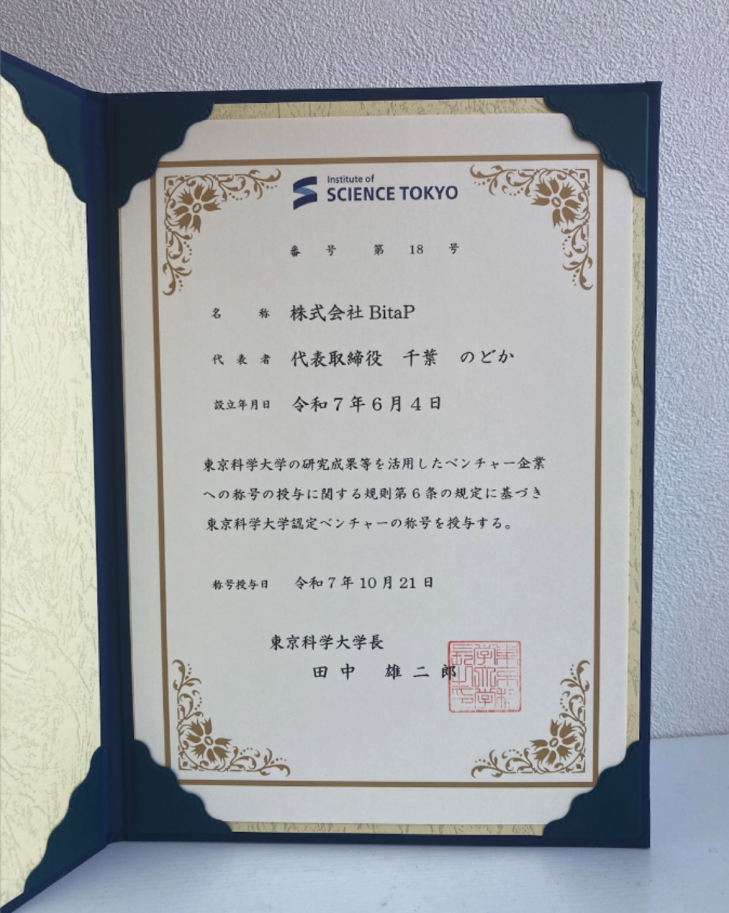

2025/10/28
東京科学大学の認定ベンチャーになりました
2025年10月28日、株式会社BitaPは、東京科学大学の「認定ベンチャー」として第18号の認定を受けました。
本制度は、東京科学大学（東京工業大学および東京医科歯科大学を含む、以下「本学」）の研究成果や人的資源などを活用している法人を対象とするものです。
BitaPは、代表の千葉が同大学の卒業生であり、現在も経営に参画している点から「関連ベンチャー」として認定されました。
（代表の千葉は、同大学で学士課程から博士後期課程まで在籍し、理学博士号を取得。現在は研究員としても所属しています。）
BitaPは腸内細菌研究をはじめ、世界中の研究活動で得られた知見を活かし、科学的根拠に基づいた食の社会実装を推進することで、あらゆる条件を考慮して個々人に最適な「おいしい×健康な食」の実現を目指して事業を展開してまいります。
大学の認定ベンチャー一覧ページはこちら：
